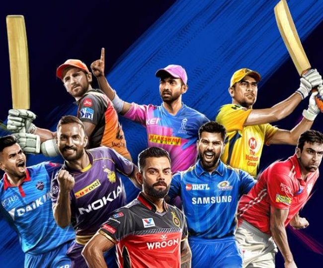

Game Overview
Cricket is not just a game in India. It is a festival, a religion. It's a way of life, source of immense joy. The game of cricket was invented in England somewhere around 13th and 15th century. The first test match was played between Australia and England in 1877, Australia emerged victorious in that match. Two teams of 11 players each battle it out in the center of an oval shaped ground. The aim is scoring more runs than the opposition team, without losing all their wickets. Their is a bowler who bowls the ball. Two batsmen who score runs and run between the wickets, a wicketkeeper who stands behind the stumps and the rest of the bowling team fields trying to stop the flow of runs and take wickets to dismiss the oppositions team's batsmen. Their are various formats in cricket. Namely, test cricket which is the ultimate testing format of the game, testing ultimate skill, stamina, perseverance in the field. The other is ODIs or One Day Internationals which is of 50 overs each (each over has 6 balls), each team batting once. The third is the fast paced T20 format. This is the shortest format of the game, 20 overs each, making it a whirlwind of big hits and quick wickets. It is the most entertaining format of the game. Cricket is not just hard hitting the ball. It is a strategic mind game, which involves a lot of shot selection, field placement, fitness, mental strength, etc. There can be nerve wracking thrillers with last ball finishes, twists and turns, that keep you at the edge of your seat biting nails :D
Game Highlights
The game of Cricket has seen various Tournaments throughout the years. The rise of T20 leagues in the recent times has made the game even more popular around the world. Test matches have also recently seen a sudden grown interest due to various factors, one of them being England's fearless approach while batting termed Bazball. Their are ODI World Cups every 4 years, T20 World Cups every 2 years, Champions Trophy every 4 years. Apart from this their are major T20 domestic leagues in almost all the major cricketing nations. Most notable being the Indian Premier League (IPL) which is globally ranked 2nd in terms of valuation. Other notable are SA20 and the BBL. Some great cricketers of the world include Sachin Tendulkar, Virat Kohli, Ricky Ponting, Jacques Kallis, Kevin Peterson, Brian Lara, Sir Vivian Richards, Brett Lee, Shoaib Akhtar, Jonty Rhodes, etc. Their stars speak for themselves.
Getting Started
The key to getting started in cricket is understanding the rules by watching some cricket games. Next and the most important part is to develop some cricketing skills, such as batting, catching, bowling, fielding, etc. Getting started with a tennis ball and a bat is recommended. Focus on core skills such as footwork, proper grip and stance. Build your stance and stamina. Do regular exercise and maintain your diet to remain fit. Play friendly cricket matches with friends. To get started professionally, have a coach or experienced player guiding you to accelerate your techniques and enhance your skills. Consistency is always the key. Doing all this consistently will definitely help you improve your game and make you a better cricketer. Also learn by your mistakes and don't get disheartened, as failure is the most importand part of the process.
Some Famous Cricketing Images